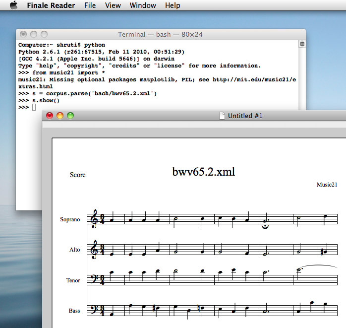

Examples
The following is a list of digital humanities projects. Finding more is easy as many universities have pages deticated to research projects in the digital humanities.
Shakespeare's Circuits
This project explores the productions of Shakespeare's plays around the world and throughout time. It demonstrates how widespread writing can reach, from the UK to South Korea to Tanzania.

Spatial History Project
This site, though no longer being updated as of 2022, housed a number of projects that focussed on geographical data and flash programming to demonstrate several ideas, from information on how geography is fundamental to understanding genocide, to the reconstruction of California conservation history

music21
This project is a set of tools that helps scholars answer questions about music such as, as their website states, "I’ll bet we’d know more about Renaissance counterpoint (or Indian ragas or post-tonal pitch structures or the form of minuets) if I could write a program to automatically write more of them."
